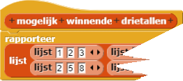
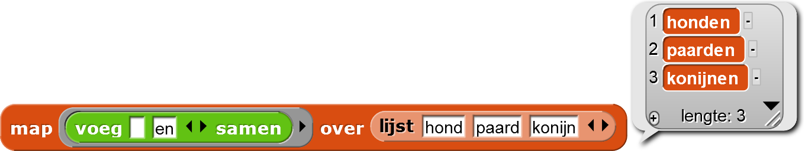
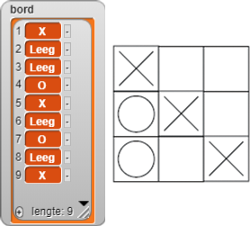
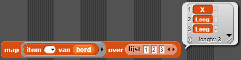
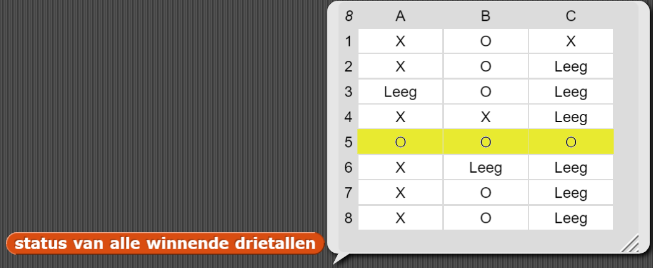
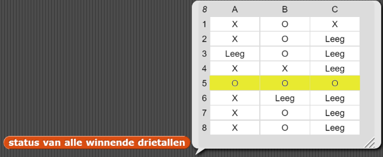

Herkennen van gewonnen en gelijkspel.
Op deze pagina ga je je Boter-Kaas-en-Eierenproject programmeren zodat overwinning en gelijkspel herkend worden.
Het opslaan van alle manieren om te winnen
Voordat we een manier bedenken om een gewonnen spel te herkennen, moeten we eerst vaststellen op welke
manier je kan winnen. Dit doen we door
elke mogelijkheid voor een gewonnen spel op te slaan door middel van een lijst van drie posities (een
drietal). Dit winnende drietal kan er bijvoorbeeld uit zien als
want het gewonnen drietal is in de
3e, 5e, en 7e
positie:


- Hoeveel manieren zijn er om te winnen?
- Schrijf alle mogelijkheden uit als drietallen.
We gaan nu een lijst maken waarin we alle mogelijkheden zetten waarop je kan winnen. Dit vergelijken we met bord.
- Open je project H3L2-BoterKaasEnEieren.
-
Maak een resultaatblok aan dat alle gewonnen drietallen rapporteert. Het ziet er ongeveer zo
uit:

Één manier om te winnen controleren
We hebben een manier nodig om te achterhalen of er werkelijk een gewonnen drietal is. We gebruiken
map om iedere positie te checken van een drietal om te kijken of er een gewonnen drietal is.
Je hebt geleerd over map in
Hoofdstuk 3 Les 1 Pagina 4: Transformeren van alle items in een
lijst.
map past de functie in de grijze ring toe op elk item in de invoerlijst, en rapporteert
een lijst met alle resultaten.

Bedenk dat het lege invoervak van de functie in de grijze ring de plek is waar een item uit de lijst komt als de functie wordt uitgevoerd.
- Klik op
 om
een nieuw spel te starten. Speel een spel en laat X expres winnen.
om
een nieuw spel te starten. Speel een spel en laat X expres winnen. -
Bouw het blok hieronder na en kijk wat het rapporteert.
Hoe werktmaphier?Deze
mapwerkt hetzelfde als hetvoeg samenvoorbeeld hierboven, maar het is wat ingewikkelder als je erover nadenkt.mapvoert elk lijstitem in het lege vakje van de functie in de grijze ring en rapporteert een lijst met de resultaten, net als voorheen .Maar nu is de functie in de grijze ring
item ( ) van (bord), dusmapcheckt de items 1, 2, en 3 van de lijst en rapporteert een lijst met wat er in de drie posities staan.Als je niet kan zien wat er in de bordvariabele staat, zorg dan dat de box is aangevinkt in het variabelenpalet. Maak het kijkvenster groot genoeg zodat je elke lijstitems kan zien, net zoals in het plaatje hieronder.
 
-
Wat zegt het resultaat van dit blok je over de staat waarin het spel zich bevindt?
- Als
{1, 2, 3}niet het drietal is waarin X het spel heeft gewonnen, vervang dan de lijst inmapmet het werkelijke winnende drietal en klik opnieuw op het blok. -
Gebruik dit idee om een -blok te maken
dat een mogelijk winnend drietal (een drietal zoals
) als invoer heeft en
een lijst rapporteert met wat er in die drie posities staat.
Je hebt geleerd hoe je het invoertype (
 ) moet specificeren
in Hoofdstuk 2 Les 2 Pagina 1: Verwerken van elk item in
een lijst.
) moet specificeren
in Hoofdstuk 2 Les 2 Pagina 1: Verwerken van elk item in
een lijst.
-
 Speel een ander spel waar speler O wint en test je
Speel een ander spel waar speler O wint en test je
status van drietalblok met het winnende drietal. Fix de bugs, als die er zijn.
Alle manieren om te winnen controleren
Je hebt net een blok gebouwd dat voor 1 drietal zal laten zien of een speler alle drie van de posities heeft
gekozen.
Nu ga je een blok, status van alle winnende drietallen bouwen om diezelfde functie op
alle drietallen toe te passen waarmee een speler kan winnen. Daarna zal je dit blok gebruiken om te
controleren of een van die drietallen drie zetten van dezelfde speler bevat.
Hieronder heeft Speler O bijvoorbeeld gewonnen en het status van alle winnende drietallenblok
bevat de status van ieder drietal. De computer kan dit blok gebruiken om te controleren of een winnend
drietal alleen X of alleen O bevat.
 

- Gebruik
mapsamen met een paar andere blokken die je gebouwd hebt omstatus van alle winnende drietallente bouwen. Het zou de status van alle winnende drietallen moeten rapporteren als een lijst met lijsten, zoals hierboven. - Welke functie je probeert toe te passen? Dat moet in de grijze ring.
- Op welke data pas je de functie toe? Dat is de lijst waarop je
maptoepast. - Maak nu een blok dat de
letter X of O als invoer neemt en
waarrapporteert alleen als die speler gewonnen heeft. - Pas je programma aan zodat wanneer een speler het spel wint, het programma dit aan de speler vertelt.
- Speel het spel een aantal keer om te controleren of het werkt en fix bugs als die er zijn. Zorg ervoor dat iedere speler minstens één keer wint.
map.
map gebruikt, denk dan na over:
gewonnen?.
Druk het uit in woorden: wat wil je precies controleren?
Zijn er blokken die je daarmee kunnen helpen?
Gelijkspel controleren
De definitie van een gelijkspel is dat er geen lege vakken meer zijn en geen enkele speler gewonnen heeft.
- Ontwikkel een manier om te controleren of er een gelijkspel is, als dat zo is zorg dan dat het programma dit dan aan de speler laat weten.
- Speel het spel een paar keer om het gelijkspel testen te controleren en fix bugs als die er zijn.
-
Waarom maakt de volgorde van de tests (voor een winnaar of gelijkspel) uit?


Je kan verder werken aan dit project in Hoofdstuk 5, Optioneel Project: Je Boter-Kaas-en-Eierenproject Herzien .
- Er zijn veel kleine verbeteringen die je zou kunnen maken. Bijvoorbeeld, als een speler wint kan je ervoor zorgen dat er geen zetten meer mogen worden gedaan. Wat zou je nog meer willen verbeteren?
- Je programma kan slimmer gelijkspel ontdekken. Als er nog maar één leeg vak op het bord is en de speler die de volgende keer aan zet is niet zou winnen door dat vak te vullen, dan is er al sprake van gelijkspel. De uitdaging is dus dat je moet controleren voor een winnaar op een bord dat niet het huidige bord is.
- In plaats van dat de sprite iets zegt zoals "X wint" is het veel leuker als je een dikke lijn tekent door de drie winnende vakjes. Dit is best lastig omdat wanneer er een winnaar is, je niet meer weet welk drietal daarvoor zorgde. Zorg dat je code leesbaar blijft.